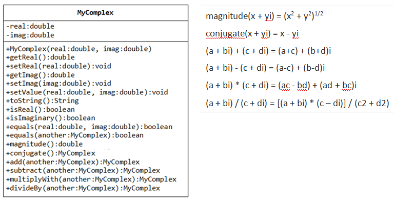

Implemente a classe abaixo, que representa números complexos. Se a sua linguagem de programação permitir, implemente a classe usando sobrecarga de operadores para as operações aritméticas convencionais: soma, multiplicação, divisão e subtração. Implemente também o operador unário de inversão de sinal, o operador de comparação e os operadores compostos de atribuição com as operações aritméticas.
